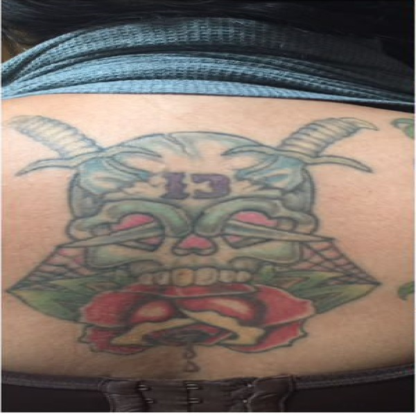
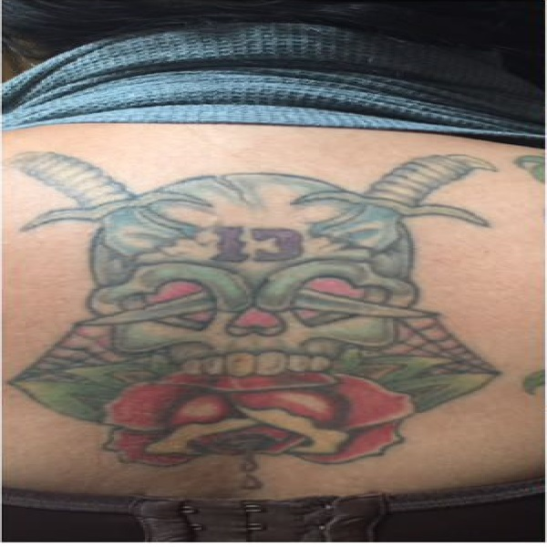

The funky ass new studio is located in the centre of bustling Sligo city. It is a bright, fresh, and styly aye studio, with a laid back, welcoming atmosphere. Located close to the Garavogue River, the studio is but a whistle from the rockin bars & crackin shoppin in the town. Sound choons, eclectic art and a relaxed crew make for a vibrant tattooing experience at UGT!


 
